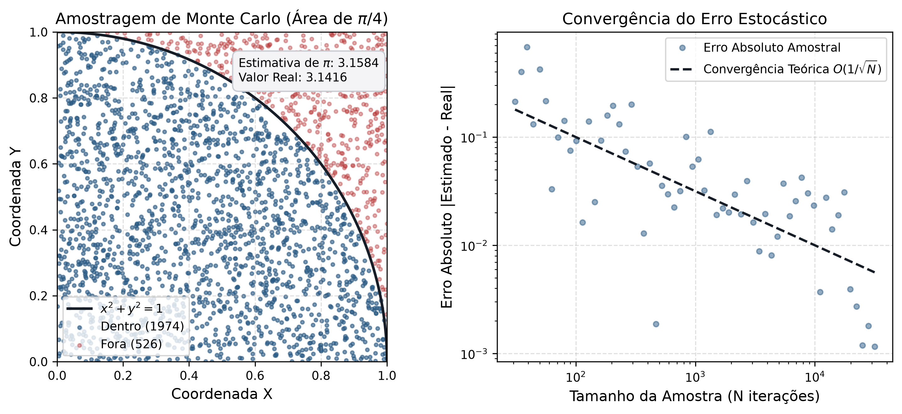
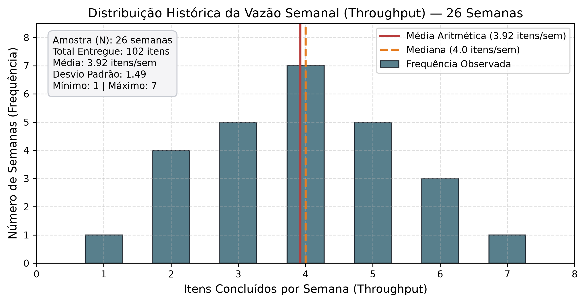
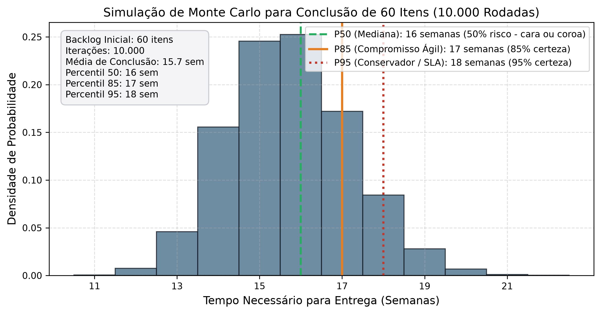
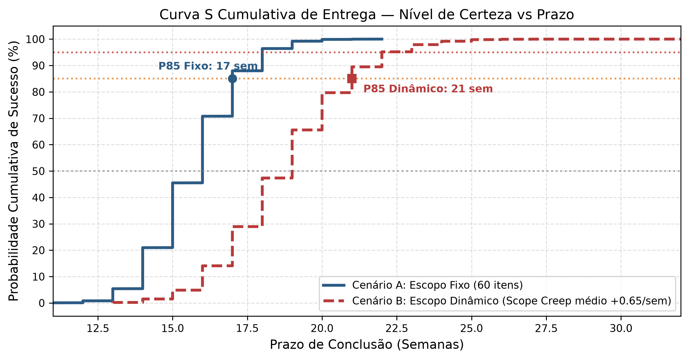

previsao de prazos com monte carlo
Governança da Medição, Modelo GQM e Análise Estocástica de Incertezas na Engenharia de Software
Simulação não paramétrica de futuros possíveis via bootstrapping.
102 itens entregues e homologados na Definition of Done.
Acordos contratuais de SLA auditáveis matematicamente.
a média é uma ilusão
Planos baseados em médias falham na metade dos casos. Se a velocidade média prevê entrega em 15 semanas, prometer essa data é apostar numa moeda não viciada: 50% de probabilidade de atraso!
Em cadeias de tarefas sequenciais, incertezas se multiplicam. Dez tarefas encadeadas com 75% de certeza individual resultam em:
A equipe crê que o plano é sólido, mas a chance de entregar no prazo é de apenas 1 em 18!
"Quando uma métrica se torna meta, ela deixa de ser uma boa métrica." Exigir aumento de Velocity apenas inflaciona as pontuações no Planning Poker. A pontuação sobe, mas a quantidade de valor entregue permanece estagnada.
Planning Poker é votação subjetiva; Horas Homem ignoram filas; Velocity esconde a variabilidade. Monte Carlo resolve isso: abandona o chute e simula diretamente o fluxo factual.
do cassino de monaco ao software

Concebido por Stanislaw Ulam, John von Neumann e Nicholas Metropolis em Los Alamos para resolver equações integro-diferenciais de difusão de nêutrons intratáveis analiticamente.
Para calcular a área de um lago irregular ou quarto de círculo, sorteiam-se pontos uniformes em um retângulo circunscrito. A fração de pontos dentro do perímetro converge para a área exata.
O erro estatístico decai com taxa O(1/√N). Com 10.000 iterações, a dispersão é amortecida e a distribuição empírica atinge precisão cirúrgica para previsões de engenharia.
gqm: meça com propósito
"Prever prazos e dimensionar a capacidade de entrega da release com respaldo estatístico auditável, mitigando riscos de estouro de cronograma e descumprimento de SLA."
Histórico de Throughput semanal (26 semanas, 102 itens homologados na DoD).
Distribuição cumulativa de 10.000 iterações com percentis P50, P85 e P95.
Delta semanas no percentil P85 entre escopo fixo e dinâmico com descoberta.
conte itens concluídos

A vazão oscila entre 1 e 7 itens/semana. O sistema absorve imprevistos reais: feriados, bugs em produção, débito técnico e impedimentos de infraestrutura.
Throughput é factual e auditável no git/Kanban. Não exige reuniões cansativas de Planning Poker e elimina discussões subjetivas sobre "se uma história vale 3 ou 5 pontos".
leia o código-fonte
import random, numpy as np
def simular_monte_carlo(historico, backlog=60, runs=10000):
semanas = np.zeros(runs, dtype=int)
for i in range(runs):
restante, t = backlog, 0
while restante > 0:
t += 1
# Amostra com reposição do histórico real
vazao = random.choice(historico)
restante -= vazao
semanas[i] = t
return {
'P50': np.percentile(semanas, 50),
'P85': np.percentile(semanas, 85),
'P95': np.percentile(semanas, 95),
}- rodbv/quando (Python): Biblioteca open-source para cálculo de previsibilidade probabilística via Jira e CSV.
- thawkin3/monte-carlo (TypeScript): Estimador estocástico web/CLI baseado em fluxo empírico.
- Troy Magennis / FocusedObjective: Modelos de referência adotados pela Agile Alliance.
Sorteia-se com reposição a vazão semanal diretamente do vetor empírico. Não força uma curva Gaussiana artificial: as assimetrias e feriados do passado são respeitados na simulação do futuro.
Com NumPy, 10.000 iterações são processadas em menos de 0,5 segundos. Previsões contínuas podem rodar automaticamente no pipeline de CI/CD a cada merge no main!
p50 é cara ou coroa

50% das simulações entregaram até aqui. Mas 50% atrasaram! Prometer o P50 a clientes corporativos é pura roleta russa.
Em 85 de cada 100 futuros possíveis, a equipe entrega até 17 semanas. O padrão ouro de governança para acordos de nível de serviço.
Recomendado para contratos com multas pesadas de descumprimento de SLA ou janelas regulatórias rígidas (BACEN, LGPD).
o escopo sempre cresce

A Curva S responde diretamente ao stakeholder: "Se você precisa de 90% de certeza, o prazo é X; se aceita 80%, o prazo é Y."
Com uma taxa modesta de descoberta de novos itens (+0,65 itens/semana):
O cliente descobre que pedir mais 10 funcionalidades custa 4 semanas adicionais de prazo. A conversa deixa de ser emocional e se torna matemática.
monte carlo orquestra tudo
| TEMA DA DISCIPLINA | MÉTODO CONVENCIONAL | A RESPOSTA COM MONTE CARLO (TEMA 7) |
|---|---|---|
| Story Points & Planning Poker | ❌ Subjetivo — Votação arbitrária distorcida pela Lei de Goodhart. | ✔ Throughput Factual — Conta itens entregues na Definition of Done. |
| Velocity | ❌ Determinístico — Média aritmética que ignora dispersão e variância. | ✔ Curva Cumulativa — Simula 10.000 futuros e entrega percentis de certeza. |
| CFD (Fluxo Cumulativo) | 🔍 Diagnóstico Passado — Exibe o acúmulo de WIP histórico. | ✔ Projeção Futura — Alimenta a simulação com a vazão extraída do CFD. |
| Lei de Little (L = λW) | 📐 Estático — Assume fluxo perfeitamente contínuo e estável. | ✔ Modelo Estocástico — Simula a turbulência quando as premissas variam. |
| Lead Time / Cycle Time | ⏳ Micro-nível — Mede a duração de itens individuais isolados. | ✔ Macro-nível — Responde: "Quando a release inteira estará concluída?" |
previsibilidade sem chute
Estabilize o fluxo reduzindo multitarefa para que a vazão histórica reflita a capacidade real.
Registre a quantidade de itens concluídos por semana (mínimo de 20 a 30 observações).
Utilize bibliotecas open-source (rodbv/quando) com amostragem com reposição e Scope Creep.
Apresente a Curva S aos patrocinadores e assuma compromissos com risco controlado.
Contém o artigo de 17 páginas ABNT em LaTeX, o script completo de simulação estocástica, suíte de testes unitários e este deck de slides.
Fábio Henrique Mendes Brasileiro • ENGS231N01
Centro Universitário FAMETRO • Manaus, AM